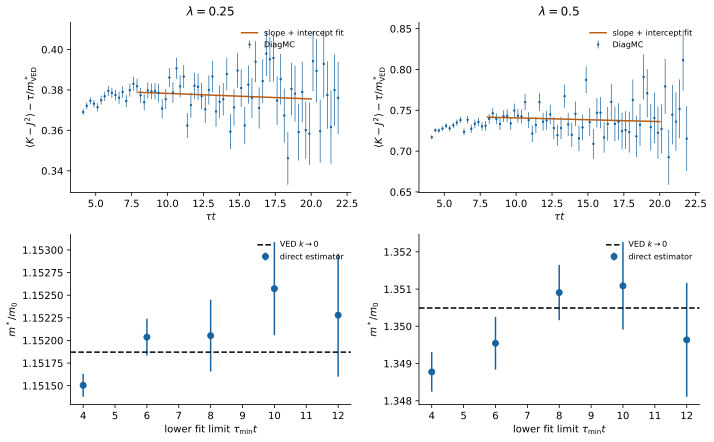
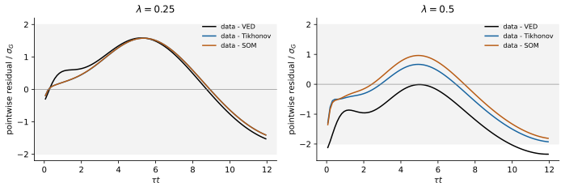
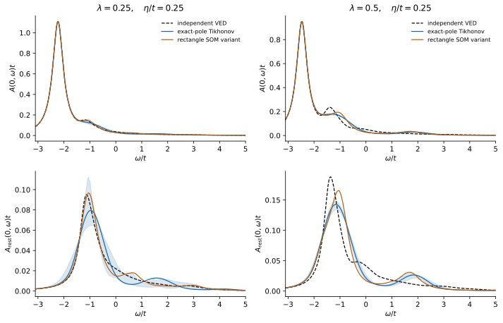
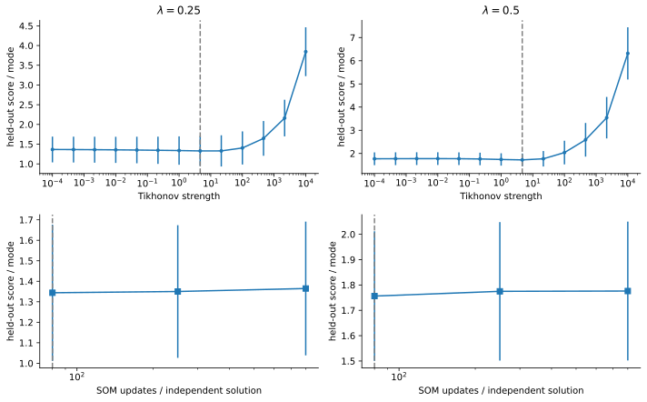
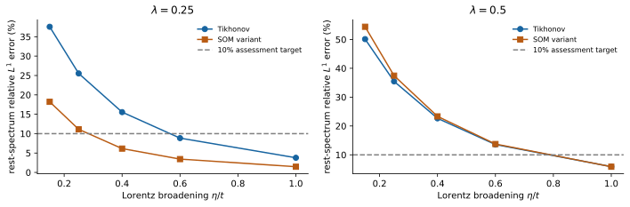

1D Holstein
DiagMC 改进与验证
零温、单电子、无限晶格。更新：2026-09-18。
查看 k–能量谱函数图：实际 DiagMC 重建、独立 VED 参考与精度检查。
直接质量估计量显著减小了统计误差；谱重建增加了非线性极点和随机优化比较。尚有参数或方法未达到10%目标，精细谱形仍需进一步检验。
新增独立链与后处理已完成；本页使用合并后的长虚时结果及新谱数据。
参数与基态结果
能量相对于无电子、无声子的真空；，自由质量 。 采样包含交叉图，内部动量连续分布在布里渊区。辅助参数 与虚时截止不改变零温的物理模型。
| 直接 | |||
|---|---|---|---|
| 0.25 | -2.2287524 ± 0.0001178 | 0.86834 ± 0.00101 | 1.15205 ± 0.00040 |
| 0.5 | -2.4698465 ± 0.0001906 | 0.73625 ± 0.00129 | 1.35091 ± 0.00074 |
± 为一个统计标准误差。 来自长虚时的相关拟合；质量来自本轮直接估计量。 质量的窗口依赖另列，不能把更小的统计误差当成全部计算误差。
下载：本轮主要结果 CSV · 完整分析 JSON · 本轮代码、分析数据与报告 · 首轮完整代码与原始块数据。 复现本轮重分析时，将两个 ZIP 解压到同一目录；原始采样没有被参考解替换。
从图的动量导数直接计算质量
已有采样保存了每段电子动量 和传播时间对应的导数统计量：
在 的反射对称性下，长虚时满足
拟合斜率得到逆质量，保留来自 曲率的截距。主窗口为 ，时间箱合并至宽度1。 均匀时间箱的指数加权只改变这一渐近直线的截距；绘图时按图点的原始箱宽转换截距。 方法背景见 Ragni 的直接估计量。
统计误差取三种块长和逐链删除 jackknife 的最大值。还扫描时间分箱、协方差收缩和拟合窗口。 首轮色散拟合为 1.1496 ± 0.0076、1.3543 ± 0.0161，与直接结果相容。
| VED | 与参考差异 | 窗口6–10的质量范围 | ||
|---|---|---|---|---|
| 0.25 | 1.15187059 | 0.46σ | 2.25 | 1.152036–1.152572 |
| 0.5 | 1.35048980 | 0.56σ | 0.64 | 1.349545–1.351087 |
此处 VED 用 与14/16代变分空间检查真正的 曲率。 首轮参考质量使用较大的动量网格，本轮参考更接近导数极限。 的拟合 偏高且窗口结果有漂移，这些影响需要结合独立链进一步检验。

{kind=link}
| 控制项 | ||
|---|---|---|
| 0.25 | mu | 1.15322 ± 0.00118 |
| 0.25 | tau | 1.15218 ± 0.00064 |
| 0.25 | order | 1.15198 ± 0.00062 |
| 0.5 | mu | 1.34193 ± 0.00328 |
| 0.5 | tau | 1.34818 ± 0.00169 |
| 0.5 | order | 1.35038 ± 0.00173 |
控制计算用于检验辅助参数、虚时截止和阶数截止的影响；它们没有被挑选来替换主结果。 同组窗口和主拟合共享数据，不能当成多个独立测量。
先检查虚时数据，再判断谱重建
将独立 VED 谱用同一精确箱积分核正向变换，与真实传播子比较。 条件积分估计的相邻虚时点高度相关，图中的逐点误差不能当成独立误差；分析保留数据协方差。

{kind=link}
基准还包括无噪声传播子，以及8组协方差与实际数据匹配的带噪声合成实验。 真实数据的模型选择先完成，之后才读取 VED 谱；合成实验用于检验方法。
| Tikhonov | SOM 变体 | |
|---|---|---|
| 0.25 | 14.2% | 4.2% |
| 0.5 | 14.8% | 4.2% |
这里“无噪声”是指输入均值取自参考传播子，仍用实际协方差、真实数据已选定的正则化强度或优化长度来评估。 它检验有限分辨率下的表示和正则化偏差，不保证含噪声数据同样准确。
精确基态极点与两种延拓方法
新版 Tikhonov 对极点能量进行精确非线性剖面优化，保留独立长虚时运行给出的相关 误差。 原来 的约 极点偏移，本轮为约 。
SOM 变体用连续矩形表示非负谱，随机改变中心、宽度和矩形数量，重新优化面积，并平均多个近最优解。 它借鉴 Mishchenko 等的随机优化思想，但更新和带协方差目标并非原文实现的逐项复现。 谱支持允许基态之上的束缚激发权重，没有预先删去单声子阈值以下的全部谱。
两种方法均检查未展宽谱的精确矩。正则化强度或优化长度由独立链留出预测选择；参考谱不参与选择。
| 首轮 Tikhonov | 新版 Tikhonov | SOM 变体 | |
|---|---|---|---|
| 0.25 | 32.6% | 25.3% | 24.1% |
| 0.5 | 36.1% | 24.5% | 18.8% |
表中为去掉基态极点后的相对 误差，在 、 下统一比较。 尚有参数或方法未达到10%目标，精细谱形仍需进一步检验。 随机优化没有在所有参数下带来改善，也不能因为一个重建更接近参考就反过来据此调参。

{kind=link}
蓝色范围来自32次链内块 bootstrap，同时传播独立 的相关误差，每次重新交叉验证选择正则化参数。 它是16–84%的经验范围，包含参数选择的波动，但不包括所有谱参数化偏差；SOM 解之间的波动也不是后验置信区间。

{kind=link}
实际能分辨到什么程度

{kind=link}
在本轮扫描的展宽中，要让两种方法、两种耦合的非相干谱误差都低于10%，最小需要到 。这已是很粗的频率分辨率，不能据此确认单个声子侧带的峰宽或细峰结构。加大展宽不等于在原来的 分辨率下完成目标；展宽也不是物理寿命。
新增采样与后续计算
新增独立链与后处理已完成；本页使用合并后的长虚时结果及新谱数据。
自动后处理将合并长虚时数据、重复两种延拓、块重采样和分辨率检查，并写出明确的验收结果。 只有既定质量目标和 的谱目标通过后，才启动 的采样与独立参考。 降低声子频率和外部声子扇区属于更后的阶段，目前没有把这些计算标记为完成。
验证包括图权重的独立动量差分、非零截距的质量提取、矩形谱的双重积分、精确极点与谱矩、展宽归一化， 以及随机优化的自由电子极限。完整原始块、源文件快照、输入哈希与运行状态保存在下载包中。